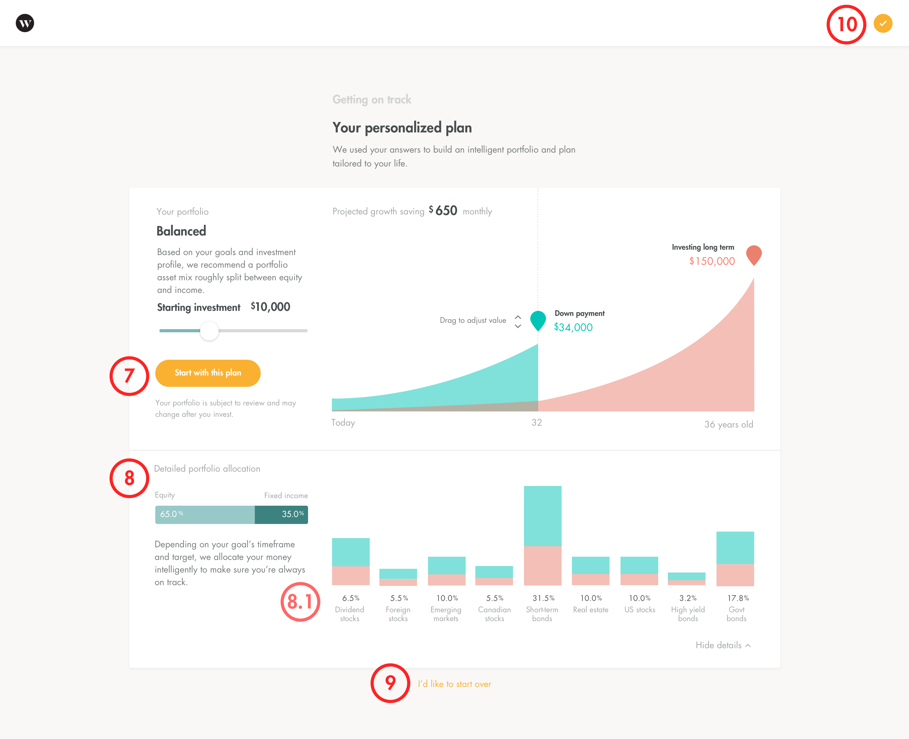

During my time at Wealthsimple as their first design intern, I redesigned features and as well as built new ones. The biggest project I worked on was leading a user experience research project on financial goals. This project aimed to uncover and understand how people plan and manage their financial goals.
Tying in financial goals to investing was natural, hypothesizing that investing is a means to a financial goal—which proved to be true in all our user interview results. This research helped leverage this validated hypothesis into redesigning our onboarding and creating other new features down the product roadmap.
This project consisted of creating a user research protocol, surveying, screening, and recruiting target users, and creating a prototype to test using Google Ventures' Sprint framework.
Through the sprint, the long-term goal established was, "to provide a leading robo-advisor service that allows people to manage their investments in the most optimal and accessible way for reaching their financial goals." The sprint question this research aimed to answer was, "will providing a financial goal-centric feature make users fund their accounts more regularly?"
After talking with subject matter experts such as portfolio managers, the target moment was focused on helping clients on deciding on their auto-deposits. This moment exists in various touchpoints of the app, and this should ideally start from the moment they sign up. Thus solutions were designed from onboarding up to in-account funding.
Various solutions were explored, taking inspiration not only from other robo-advisors or financial services, but also gamification and reward systems. This allowed for ideas outside of the domain to be integrated into the solution. Successful examples of reward and gamification systems followed similar mental models I wanted to take advantage of—driving users to do in-app activities (or deposits) to gain rewards later (or investment earnings).
The redesign flow of the onboarding process can be seen in the No Call Model HTA (Hierarchical Task Analysis) where the visitor is financial goals and planning questions in addition to investment risk questions. This allows us to leverage their data to create a questionnaire endpoint that drives them to sign up and know how much their monthly auto-deposit must be, right from the get go.

The user research protocol consisted of interviews, card sorting, and a moderated usability test. Various methods were used to uncover answers across behavioural and attitudinal dimensions. The target user criteria was determined through metrics and corresponding demographics of Wealthsimple clients.
4 people participated in one and a half hour long user research sessions. There were great reviews of the prototype, and 3 out of 4 participants claimed they would love to use the features in the prototype. The prototype solved the one common problem they all had—poorly defined financial goals.
Working with Calvin Cheng, the design lead of the No Call Model project, my prototyped and tested designs were incorporated into the redesign of Wealthsimple's onboarding. The end product kept the essentials of the financial data visualization and more intuitive visualization controls as noted from the research.

The No Call Model onboarding was put into production in April 2017. It was aptly called as such since it was meant to reduce the number of portfolio manager calls required to let clients fund into Wealthsimple. With the new questionnaire, it is now legally compliant to not require PM calls in order to fund greater than $5,000. Thus, the No Call model has reduced the number of PM calls by more than 50% in its first week of release.
Auto-deposit rate data was too early to collect and hence, remains inconclusive to me after my time at Wealthsimple. Nonetheless, the research proved to make it easier for users to fund their accounts with a guided amount, as the prototype provided.